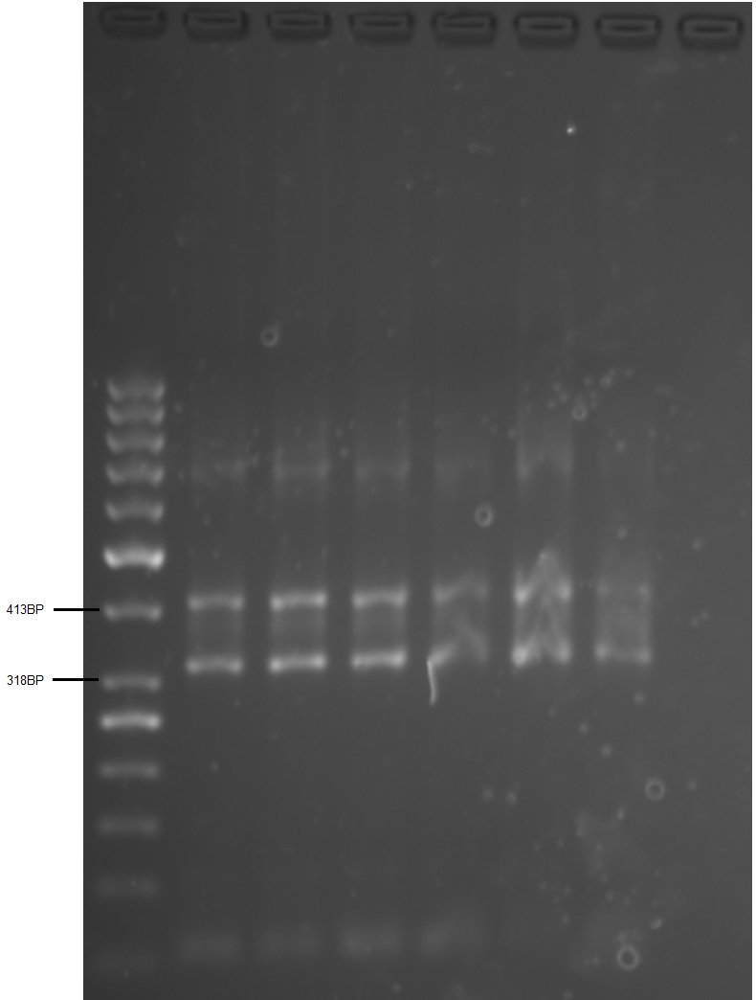

Labbrapport: Ekstraksjon og analyse av DNA
Introduksjon
Fysisk prestasjon påvirkes av mange forskjellige faktorer. Et fokus de siste årene har vært forskning på genetikks påvirkning på prestasjon. Et gen som ofte er assosiert med muskelfunksjon og fysisk prestasjonsevne er ACTN3 (Pickering and Kiely 2017). ACTN3 står for alfa-actinin-3 og koder for et protein som kun finnes i type-II muskelfibre. Proteinet er involvert i muskelkontraksjon og bidrar til å skape eksplosiv kraft ved høye hastigheter (Yang et al. 2003). En polymorfisme av genet er R577X. Her erstattes arginin (R) med et prematurt stoppkodon (X) ved aminosyre 577, noe som resulterer i en forkortet versjon av genet (Eynon et al. 2012). R-allelen er assosiert med kraftidretter og X-allelen finnes for det meste hos utholdenhetsutøvere.
En metode som ofte brukes for å bestemme denne polymorfismen er RFLP-teknikken (restriction fragment length polymorphism technique) og real-time polymerasekjedereaksjon (PCR). En enklere og billigere metode er presentert av Schadock et al. (2015): her utføres en enkelt PCR-test med 4 primere. Resultatene ble validert ved hjelp av real-time PCR-metoden. Schadock et al. (2015) bruker primere som viser et produkt ved henholdsvis 413 basepar og 318 basepar når en R- eller X-allel er til stede.
I denne undersøkelsen ble DNA ekstrahert fra helblod, etter videre bearbeiding og gjennomføring av PCR-test ble genotypene bestemt ved hjelp av gelelektroforese.
Metode
Fra helblod har vi ekstrahert DNA i henhold til protokoll adaptert fra Bartlett & Stirling (2003). Dette har vi brukt til å bestemme ACTN3 genotype ved hjelp av protokoll adaptert fra Schadock et al. (2015).
Det ble innhentet blod i EDTA-rør fra hver av deltakerne ( P, IJ, EÅ, og EH). 3 mL blod ble pipettert over i et 15 mL rør. Vortex før pipettering. Deretter tilsatte vi 12 mL reagens A. Dette ble mixet ved rotasjon i 4 minutter. Deretter sentrifugerte vi rørene ved 3000g i 5 min ved romtemperatur. Supernatanten avpipetteres og kastes uten at cellepellets forstyrres. All overskuddsvæske fjernes. Reagens B tilsettes før vortex 30s.
250 µL 5M natriumperklorat ble tilsatt og det hele ble blandet ved rolig vending av røret før det ble plassert i vannbad (65°C) i 15-20 min. Prøven ble deretter avkjølt til romtemperatur og tilsatt 2 mL iskald kloroform, blandet på roterende mikser i 60 minutter, og sentrifugert ved 2400g i 2 min.
Den øvre fasen ble deretter avpipettert over i et rent falcon-rør med en steril pipette. Ved å tilsette 2 mL avkjølt 100% etanol, utfelles DNA. Dette overførte vi til et 1.5 mL rør og fjernet overskuddsvæske før vi lot DNA’et lufttørke. Vi tilførte deretter 200µL av TE bufferen. For å kvantifisere DNA konsentrasjonen i spektrofotometer ble prøven vortexet og 2 µL prøve ble overført til en µdrop-plate. 2 µL TE buffer ble brukt som negativ kontroll. På grunn av ulik konsentrasjon, måtte vi fortynne løsningen for å få lik konsentrasjon på 100 ng/µL.
Vi benyttet det ekstraherte DNA’et, og blandet det med master mix, primer mix i brønner og kjørte dette i PCR-maskin.
For å kjøre elektroforese, måtte vi preparere en gel. 10X TBE buffer ble fortynnet med H2O til en 1X løsning. Deretter tilsatte vi 100 mL av den fortynnede løsningen i et konisk begerglass. 2 g argarose ble tilsatt for å danne en passende prosentvis gel (2%). Vi benyttet Sybr safe gel stain og tilsatte 10 µL i 100 mL løsning som vi varmet opp på en varmeplate inntil løsningen ble klar. Deretter ble denne avkjølt til ca 60°C før vi helte den over i en gel form og plasserte kammen på riktig sted. Gelen polymeriserte i løpet av en time og vi fjernet deretter kammen. Gelen ble plassert i elektroforese-unit’en og vi helte 1X TBE i elektroforesebeholderen så det dekket alle brønnene. Vi blandet prøvene med 4µL loading dye før vi sentrifugerte dem. Deretter plasserte vi ladder i brønn 1, prøver fra P i brønn 2 og 3, fra IJ i brønn 4 og 5, fra EH i brønn 6 og 7 og H2O i brønn 8. Vi koblet på strøm med 150 V og kjørte elektroforesen i ca. 1 time til fargen var ca. 80% gjennom gelen.
I G:Box kunne vi visualisere gelen ved bruk av UV lys og Sybr green - innstilling.
Resultater
Konsentrasjonen av DNA mellom 200-500 ng/µl er forventet. Vi fant hhv P; 256 ng/µl, IJ; 155ng/µl, EÅ; NA, EH; 267 ng/µl.
(Vi måtte da fortynne løsningen for å få lik konsentrasjon på 100 ng/µl.)
Alle testpersonene produserte bånd på 413(R) og 318(X) bp

Diskusjon
Av våre fire testpersoner, fikk tre et resultat. Alle disse er RX.
Det betyr…..
Konsentrasjonen av DNA var litt lav for en av testpersonene. Dette kan skyldes at ikke all supernatant ble fjernet i den tidlige produksjonsfasen, eller at man ikke fikk med nok øvre fase før vi tilsatte etanol. I den ene prøven, hvor DNA konsentrasjonen ble for lav til videre undersøkelse, ble midtre fase forstyrret.